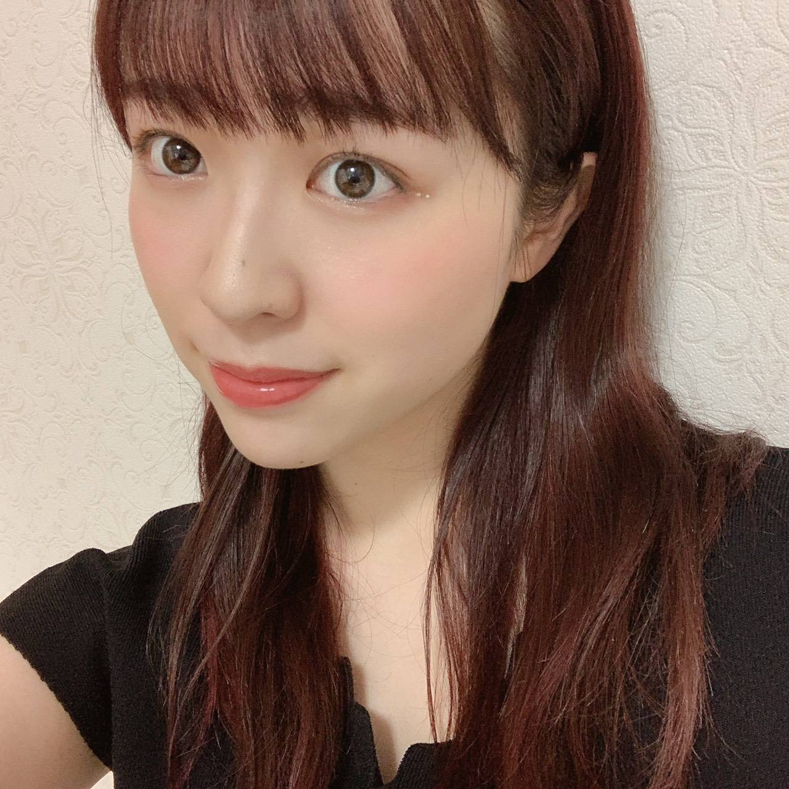
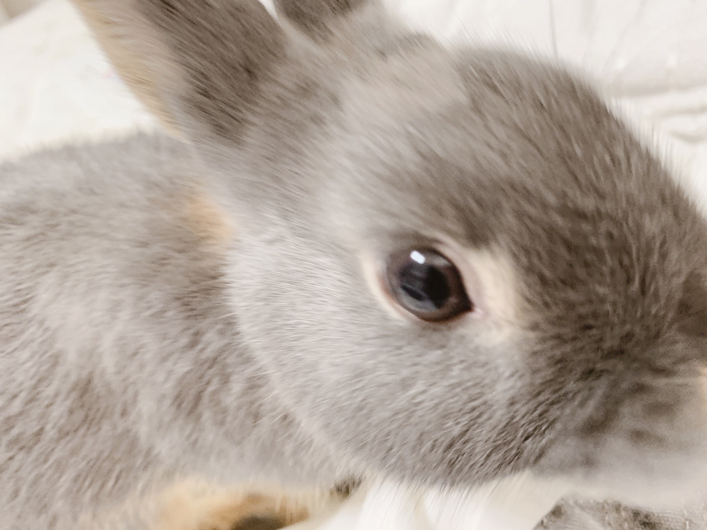
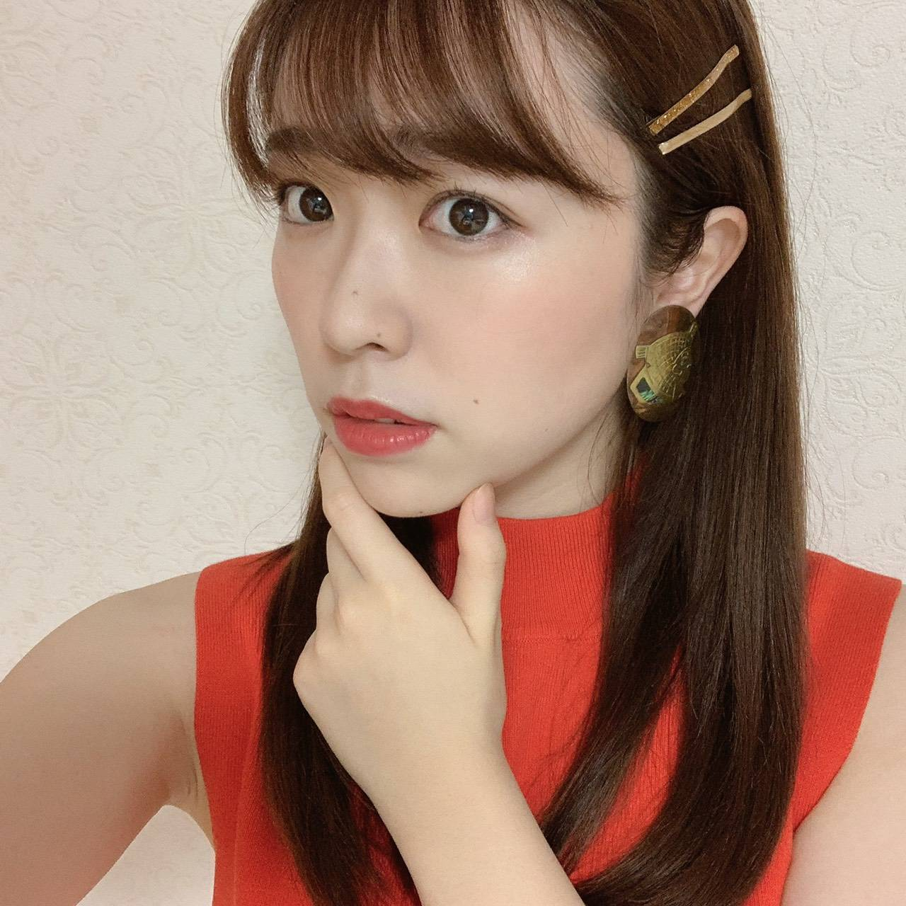

2020/0710Fri尻尾は黄色よ

お仕事の休憩時間に純奈がコーン付きアイスを
買ってくれました。
とっても嬉しくて机に置いて、
急ぎで梅座右衛門に用があったので
梅座右衛門の元に行ってきました。
帰ってきたらコーンしか残っていませんでした
コーンもしなしなでした。
今度は私が買ってあげます。
渡辺みり愛です（＾ω＾）

リズは元気ですよ！
爪切りにペットショップへ行くのですが
爪切りしている間人形かというくらい
固まってて不安そうにこっち見てくるし
身体完全に私に向けてくるし
怖いんだよね？緊張するよね？
そんなに私のこと好きなの？
お母さんの事好きなの？かあいいね？
と母性漏れ漏れになっております。

イヤリングはヴィンテージ
気に入り過ぎて買いました
絵柄、クレオパトラみたいな人がいる。
今やりたい事
・今年も読売ジャイアンツさんの試合早く
ドームに観に行きたい
・ルームディフューザーそろそろ
違う匂いに変えたい
・洋服爆買い
・毎年恒例だった家族旅行へ行きたい
皆さんが今やりたい事ありますか？
是非教えて下さい
早くライブがしたいなあ
そして、早く皆さんに会えますように、、
みり愛
2020/07/10 20:42


コメント(425)
今日俺の誕生日なんだ！！
みり愛大好き！
早く会いたいよ〜
浦和の試合見に行きたいのとみり愛ちゃんに早く会いたーい
あとはみり愛ちゃんに会うこと！
アイスがおいしい季節になりました。笑
今年したい事
花火
BBQ
これだけは絶対したい笑
早くみり愛ちゃんあいたいー！
また感染者の方が増えてるいるけど気をつけて
会える日楽しみにしてます
最後に握手してからもう半年も経ったんだね〜
なかなか会えない日が続くけど体調に気をつけてがんばってね！！
髪色も顔も相変わらずお綺麗で〜
ジャイアンツの試合、見に行きたいね〜
一軍ももちろんだし、阿部二軍監督の試合もジャイアンツ球場まで見に行ってみたいね！！
あとは、久しぶりにみり愛ちゃんの個握行きたい！たぶんもっと先の話だろうけどね〜笑
話したいこといっぱい探しとくね〜！！笑
自分ももしコロナが収まれば日本のどこかに旅行行きたいと思ってます！！！！！！！！
うさぎの爪切りって難しいのよ！
わんこもシャンプーとか連れてくけどすごいこっち向いてくるよねw超可愛いの
イベント再開できるよう祈っとこう！
私がコロナが治まったらしたい事は、5月に行けなかった握手会に行くことです！
ファンの人がいる野球は格別ですね。
いつもありがとう。
リズくんもみり愛ちゃんもかわいい！
今やりたいことは
巨人戦を観にいきたい
巨人のことをみり愛ちゃんとお話したい
このふたつです！
みり愛のおかげで本当に頑張れてます！
早く会える状況になるよう願うばかりです、、、！
コーンつきアイス残念なことに…
リズちゃん可愛いですね
かあいいって言ってるみり愛ちゃん可愛いです
やりたいこといっぱいありますね
僕もライブに行きたいです
あとは旅行ですかね
またの更新楽しみにしてます
自分の目標は！
みり愛ちゃんに会いにいく！！
みり愛ちゃんのグッズ全部買う！
握手会に…行きたいです…
みり愛ちゃんに会いてぇ！です
東京ではコロナ感染者が増えてきていますね。十分に気をつけて過ごしてください。手洗いうがい、消毒も忘れず。早く会えるように今は、我慢です。頑張りましょう！
今年はジャイアンツの誰に期待してますか？
リズも元気そうで何よりです。
今年は野球見に行きたいかなぁ〜！
テレビとかで見るよりもやっぱり現地の方が臨場感あるしね〜
因みにオリックス応援してます！
ベリーピンクの髪色も良き！！
また逢える日まで頑張るねー！
では！
純奈ちゃんとのトークが聞けて嬉しいねぇ笑
リズも元気そうで良かった！
服もイヤリングも個性的で凄くオシャレだね！
握手会で見てみたいな
今年は受験生だからあまり大きなことに挑戦できないけど、出来るだけ早くみり愛ちゃんが歌って踊ってる姿を生で見て、その感想だったりたわいもない話を握手会で話したい！
動物ってなんであんなうるうるした目で助けて〜って言ってるみたいに見てくるんだろうねずるいよねわかるよその気持ち
私もわんことにゃんこの病院行く時すっごい不安そうな顔するの助けてあげたくなる！
最近は毎日学校でコロナのせいで土曜日も学校なのよ、、
看護学生頑張ってるよ〜！！！
次会えるのはいつかな〜そのときにたくさんいい報告たくさんできるように頑張るね！
私は今みり愛ちゃんに1番会いたいです！
服の爆買いはもうしちゃってます！
早く会いたいぞー大好きだぞ〜
うちのうさぎも家では暴れ放題なのに、爪切りに連れてくと大人しいって言われる笑
緊張しいだから仕方ないけど、そんなところも可愛いんだよねー
そんな話を直接みり愛とできるのはいつになるやら…
話題が溜まりすぎて大変だ
リズめちゃくちゃ可愛いね！！
今日から観客入れてからのぎおび応援ですね！！
俺はもしナゴヤドームで巨人対中日のチケットが取れたら絶対応援に行くからね！！
今年も巨人の応援頑張ろ！！
俺も早くみり愛に会いたいなー！！
色んなお話したいしね！！
僕もペット飼ってるから母性溢れるのめっちゃわかる！
可愛いよねー
みり愛ちゃんに愛されてるリズが羨ましい
今したいことはたくさんあるよ〜
旅行行きたいんだー、できれば海外。
春休み一人旅してきたんだけど、また行ってみたいと思ってる。
とりあえず今は行けるようになったときのために行きたい所を調べようかなぁーって。
みり愛ちゃんは国内外問わず行きたい場所はありますか？
みり愛ちゃんにこのお話もしたいけどいつになるかなぁ。。
やっぱり握手会でみり愛ちゃんと話したり、ライブでみり愛ちゃんのパフォーマンスが見たいな。
いつになるかわからないけど、楽しみにしてるね！
始まり方が可愛くて面白くて笑いましたw
久々にリズ見た気がする！ちょうどこの前みり愛ちゃん好きの人達とあまりずどうなってんのかな？って話してました。
相変わらずかわいいね！リズちゃんもみり愛ちゃんも
今年やりたいことが...
自分は去年からずっとみり愛ちゃんの握手に行きたくてずっと言ってるんだけど、いざ行くとなると緊張して最後に行こうって思ってたらいっつも時間が終わってたり、今シングルの個握券取らせてもらったんだけど全部なくなっちゃったからさ...
早く会いたいなっていつも思いながら仕事してます。
いつか会える。それが生きてる中でのモチベであり、握手することが目標です！今の状態であったら泣くかもwww
ま、許してね
いつもモバメとか沢山ありがとうね！！
みり愛ちゃん大好きだよ！！
ベリーピンクの髪色似合うねえ
みり愛ちゃんのアイスは俺が買ってあげます( ¯▽¯ )
早くライブ行きたいなあ、、、
毎日のメールは楽しみにしてます！
みり愛ちゃんも健康には十分気をつけてね！
今日も色々お疲れ様！！
今年やりたいこと？そんなの決まってるやん、みり愛姉ちゃんに会って、色んなこと話すことだよ！！
それまでに色々部活と勉強とか努力して帰ってくるから待っとって
あとちょっと前の乃木中をたまたま見てたから髪も伸びた印象！
野球、サッカーといろいろ再開してきた中でまた感染者の数が増えてきたので少し不安なところもあるけど、
スポーツを見ると元気が貰えるしやっぱり観てて楽しいよね。
リモートで話すことが当たり前になってきて、
その反動でみんなで集まってワイワイしたい欲が強まってきたから、
飲み会とかやりたいかな笑笑
完璧なのは、
乃木坂のライブに行って、
その帰りにみんなで居酒屋行って、
今日は最高やった！って盛り上がる流れかな(笑)
油断せずにこれからも頑張って行こ
ぼむすけ
そのエピソード面白すぎる。ごめんねスムージーみたい。
やりたいことかぁ。自分は阪神ファンだけど、みり愛ちゃんの影響で巨人も好きになったから伝統の一戦見に行きたいな。
あと、みり愛ちゃん推しの人とも会いたい。
そして、みり愛ちゃんに会って、沢山話したい。
東京コロナの人数増えてるらしいし、ほんとに気をつけてね！
早く、会いたいな！！
ブログまた更新してるの待ってる！！
755もたまにしてて、それだけで幸せになれるよ！
私も早くライブに行きたいです。
新しい日常に慣れないと....
1枚目の目のところのキラキラは何？めちゃ可愛いよ(*´ω｀*)♡♡♡
そして、日奈子はリズちゃん会いたいとラジオに言ったよ、知ってた？＼(^o^)／
きゃーー、他のみり愛たんのショットも可愛くて可愛くて(｡>﹏<｡)♡♡♡♡
これからも頑張って(/･ω･)/
そろそろ会いたい笑笑
コメントする